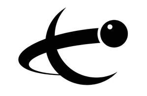

Trade Mark Journal No.2026/006 6 February 2026
UK00004301421 26 November 2025 (9,25,28,41)

- Class 9
- Apparatus for recording, transmission or reproduction of sound or images; magnetic data carriers, recording discs; compact discs, DVDs and other digital recording media; mechanisms for coin-operated apparatus; cash registers, calculating machines, data processing equipment, computers; computer software; software applications; computer software applications, downloadable; computer software, recorded; computer game software; television apparatus; sound reproduction apparatus; audiovisual teaching apparatus; magnets; sunglasses; battery chargers; cinematographic film, exposed; decorative magnets; apparatus for broadcasting sound, data or images; apparatus for recording television programmes; audio and video recordings; downloadable computer game software; electronic broadcasting apparatus; electronic publications, downloadable; electronic publications; electronic sports training simulators [computer hardware and software-based teaching apparatus]; event recorders; interactive computer software enabling exchange of information; magnetic cards being computer software; radar guns for sporting events; sport whistles; sports eyewear; transmitting and receiving apparatus for radio broadcasting; transmitting and receiving apparatus for television broadcasting; chronographs [time recording apparatus]; holograms; time clocks [time recording devices]; rulers [measuring instruments]; digital signage; intercommunication apparatus; editing appliances for cinematographic films / apparatus for editing cinematographic film; sounding apparatus and machines; diagnostic apparatus, not for medical purposes; measuring devices, electric; cables, electric; semi-conductors; printed circuit boards; connections, electric; video screens; remote control apparatus; optical fibers [fibres] [light conducting filaments]; protective helmets for sports; apparatus for broadcasting, recording, transmission or reproduction of sound, data or images; electronic broadcasting apparatus; video cameras for broadcasting; apparatus for broadcasting, recording, transmission or reproduction of sound, data or images in relation to sports and sporting activities; apparatus for broadcasting, recording, transmission or reproduction of sound, data or images in relation to sports and sporting activities, namely pool, snooker and billiards; apparatus for recording television and radio programmes in relation to sports and sporting activities; apparatus for recording television and radio programmes in relation to sports and sporting activities, namely pool, snooker and billiards; transmitting and receiving apparatus for television and radio broadcasting in relation to sports and sporting activities; transmitting and receiving apparatus for television and radio broadcasting in relation to sports and sporting activities, namely pool, snooker and billiards; electronic publications in relation to sports and sporting activities; electronic publications in relation to sports and sporting activities, namely pool, snooker and billiards; parts and fittings for all the aforesaid goods.
- Class 25
- Clothing, footwear, headgear; boots for sports; socks; gloves [clothing]; scarves; ties; belts [clothing]; clothing for children; articles of sports clothing; clothing for leisure wear; outer clothing; babies' clothing; ladies' clothing; menswear; hats; infants' footwear; footwear for sports; children's footwear; footwear for women; footwear for men; bibs, not of paper; bathing suits; swimsuits; waterproof clothing; masquerade costumes; sashes for wear; shower caps; sleep masks; wedding dress; clothing in relation to sports and sporting activities; clothing in relation to sports and sporting activities, namely pool, snooker and billiards; footwear in relation to sports and sporting activities; footwear in relation to sports and sporting activities, namely pool, snooker and billiards; menswear in relation to sports and sporting activities; menswear in relation to sports and sporting activities, namely pool, snooker and billiards; womenswear in relation to sports and sporting activities; womenswear in relation to sports and sporting activities, namely pool, snooker and billiards; parts and fittings for all the aforesaid goods.
- Class 28
- Games, toys and playthings; video game apparatus; gymnastic and sporting articles; decorations for Christmas trees; gloves for games; apparatus for games; playing cards; billiard balls; billiard cues; billiard cue tips; billiard markers; billiard tables; chalk for billiard cues; handheld computer games; apparatus for games; balls for games; counters for games; electronic games; gloves for games; sports games; bags adapted for sporting articles; toys incorporating money boxes; kites; gymnastic or sports shaking machine; targets; darts; whistle; swimming pools [play articles]; roller skates; floats for fishing; scratch cards for playing lottery games; snooker rests; table cushions being parts of snooker tables; billiard game playing equipment; billiard table cushions; billiard tally balls; nets for billiard tables; sports games in relation to sports and sporting activities; sports games in relation to sports and sporting activities, namely pool, snooker and billiards; sporting articles in relation to sports and sporting activities; sporting articles in relation to sports and sporting activities, namely pool, snooker and billiards; parts and fittings for all the aforesaid goods.
- Class 41
- Education; providing of training; entertainment; sporting and cultural activities; coaching [training]; organization of sports competitions; providing on-line electronic publications, not downloadable; television entertainment; entertainment information; timing of sports events; games equipment rental; advisory services relating to the organisation of events; advisory services relating to the organisation of sporting events; arranging and conducting of games; arranging and conducting of competitions and events; arranging and conducting of sports competitions and sports events; arranging and conducting of seminars, conferences and exhibitions; educational services relating to sports; electronic games services provided by means of the internet; entertainment services relating to games and sport; hire of equipment for sports; information services relating to sport; organising of sporting events and sporting tournaments of sporting events for television; production of sporting events for radio; production of sporting events; providing information relating to sports persons; providing information relating to sports; providing sports news; publication of electronic books and journals on-line; publications on the Internet; publication of printed matter in electronic form; recording, production and distribution of films, video and audio recordings; production of radio programmes and of television programmes; provision of recreational facilities; physical fitness instruction; sports tuition, coaching and instruction; sporting results services; ticket reservation and booking services for sporting events; operating lottery sales; toy rental; lending libraries; snooker hall services; provision of snooker facilities; providing billiard facilities; rental of billiard tables; providing billiard rooms; entertainment services in relation to sports and sporting activities, namely pool, snooker and billiards; news reporter services in relation to sports and sporting activities, namely pool, snooker and billiards; providing on-line electronic publications, not downloadable in relation to sports and sporting activities; providing on-line electronic publications, not downloadable in relation to sports and sporting activities, namely pool, snooker and billiards; organising of sporting events and sporting tournaments in relation to sports and sporting activities, namely pool, snooker and billiards; organization of exhibitions for cultural or educational purposes in relation to sports and sporting activities, namely pool, snooker and billiards; providing information relating to sports in relation to sports and sporting activities, namely pool, snooker and billiards; practical training [demonstration] in relation to sports and sporting activities; in relation to sports and sporting activities, namely pool, snooker and billiards; publication of texts and books in relation to sports and sporting activities, namely pool, snooker and billiards; publication of printed matter in electronic form in relation to sports and sporting activities; publication of printed matter in electronic form in relation to sports and sporting activities, namely pool, snooker and billiards; radio and television entertainment in relation to sports and sporting activities; radio and television entertainment in relation to sports and sporting activities, namely pool, snooker and billiards; production of radio and television programmes in relation to sports and sporting activities; production of radio and television programmes in relation to sports and sporting activities, namely pool, snooker and billiards; providing sports facilities in relation to sports and sporting activities, namely pool, snooker and billiards; information, advisory and consultancy services relating to the aforesaid services.
World Professional Billiards and Snooker Association Limited
Representative: Shoosmiths LLP